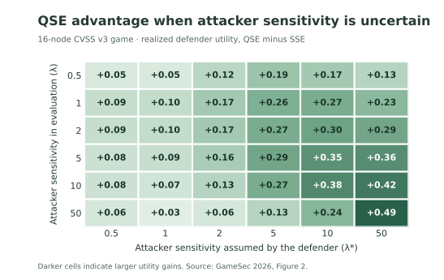
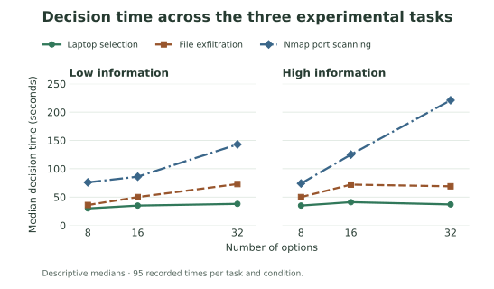
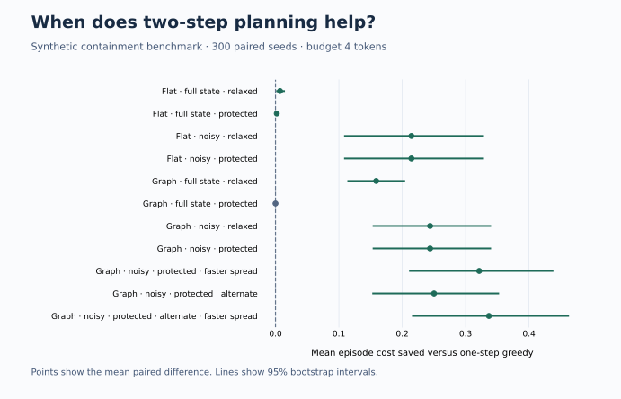

How should a defender place decoys when its estimate of an attacker’s behavior is wrong? Our study compared quantal Stackelberg equilibrium (QSE) with strong Stackelberg equilibrium (SSE) on two cyber–physical networks built from real vulnerabilities. QSE improved realized defender utility in all 144 comparisons on the tested rationality grids. The study also found that SSE could lead against some attackers that concentrate on a hard best response.
What happens when the defender misjudges attacker sensitivity?Each cell shows QSE’s realized defender utility minus SSE’s for one assumed and evaluated sensitivity pair.

This is one of the study’s four rationality grids. The 46–175% range comes from a separate parameter sweep. Figure 2 and Table 4 · Full-size figure
Explore a quantal attacker’s responseMove the slider to see how response sensitivity changes target selection.
Probability of selecting each target0–100%
Illustration of the logit response, p(i) = exp(λuᵢ) / Σⱼ exp(λuⱼ), with fixed utilities 1, 2, and 3. This demonstrates the response model; it does not run the defender’s optimizer or reproduce a paper result.
Can more options and more information slow decisions during a cyber attack? In this human-subject study, participants selected laptops, chose files to exfiltrate, and made choices in an Nmap port-scanning task. The published analysis found adverse effects of choice complexity, with patterns that varied by task.
How long did participants take to decide?Median decision time across 8, 16, and 32 options, shown separately for low- and high-information conditions.

The median for Nmap port scanning was 76 seconds with 8 low-information options and 221 seconds with 32 high-information options.
Descriptive summaries of the experiment’s recorded timers, with 95 observations per task and condition. The endpoint comparison changes both the number of options and the amount of information. Notebook timer analysis · Full-size figure
Explore the information in a choice setChange the options and attributes, then select a target in the table.
Illustrative target attributes
Illustrative attributes on a 1–9 scale; darker cells indicate larger values. These are example choice sets, not experimental data. The research measures how people respond to complexity; this figure does not predict a participant’s performance.
When an alert suggests lateral movement, which response blocks the most risk while keeping critical services reachable? This exercise models five hosts across three zones, with a directed attack graph, noisy alerts, and a shared response budget. The demo ranks actions such as inspecting a host, restricting a link, or isolating a device and explains what each action protects.
When does looking two steps ahead help?Paired cost differences across simulated conditions, with 95% bootstrap intervals. Values to the right of zero favor two-step planning.

In the base graph with noisy alerts and protected services, critical compromise fell from 30.7% to 21.0%. Two-step planning averaged 1.33 response tokens versus 0.69 for greedy under the same four-token cap.
The two-step variants with and without planned responses to future alerts matched in these runs. These results use a synthetic five-host network. Benchmark data · Full-size figure
Earlier RL benchmark: what happens when the network grows?Compare the fraction of network value lost across two size ranges. Lower is better.
Network value lostFixed scale: 0–20%
Reported repository results: 300 episodes per policy with shared seeds. PPO and DQN train on 8–14 nodes; PPO-DR uses 8–20. The repository’s ablation also finds that a simple allocation-tracking baseline nearly matches QSE. Experimental details.
NXDOMAIN Sentinel groups repeated failed DNS lookups into cases an analyst can investigate. It scores how generated a domain looks and independently measures how far it is from known malware families. The replay benchmark tests whether combining those signals with device behavior helps identify episodes the classifier misses.
How much does recall change on an unseen family?The five largest recall losses and three dictionary-based families from the historical domain benchmark.
Pilot question. Can the combined detector find more previously unseen DGA episodes at the same observed alert rate? The replay and synthetic benchmark run locally. The real-traffic evaluation needs authorized resolver logs and reviewed case labels.
Does detection transfer to an unseen family?Select a family to compare the fraction of its domains detected. Higher is better.
Recall0–100%
Reported family-level results from the repository’s five-fold evaluation. “In training” and “held out” refer to the same family across different folds. These are classifier recall values, not novelty-gate scores. Methods and limitations.